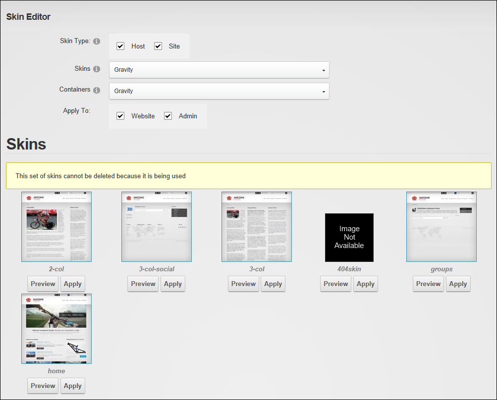

The Skins Editor enables users to manage skin packages, skins and containers. Skins that have been installed on this site are available to all sites within this DNN installation. The Skins Editor is located on the Admin > Advanced Settings >  Skins page and can be added to site pages.
Skins page and can be added to site pages.
